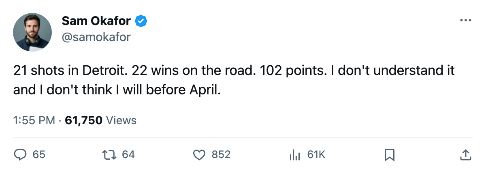

TOR
TORLeafs 3, Red Wings 2: 21 shots in Detroit, and Carolina brings a 7-game skid to town Tuesday
Toronto extended its road record to 22-9 without controlling a single stretch of the game at Joe Louis, and the Atlantic's worst road team visits tomorrow
 Sam OkaforLeafs beat reporter · Queen City Telegram
Sam OkaforLeafs beat reporter · Queen City Telegram
 Marian Gaborik97 has 81 points and the top spot on the League Scouting Bureau's Development Index at +6.
Marian Gaborik97 has 81 points and the top spot on the League Scouting Bureau's Development Index at +6.  Brad Richards86 sits at +4.
Brad Richards86 sits at +4.  Rostislav Klesla83 and
Rostislav Klesla83 and  Rick Nash82 are both at +5. Four Maple Leafs on the Bureau's risers list, and on Sunday night in Detroit, the team generated 21 shots against 47.
Rick Nash82 are both at +5. Four Maple Leafs on the Bureau's risers list, and on Sunday night in Detroit, the team generated 21 shots against 47.
The 3-2 road win was Toronto's 22nd on the road this season, a 22-9 mark that keeps them first in the  NOR by 30 points over
NOR by 30 points over  Boston Bruins.
Boston Bruins.  Detroit Red Wings outshot them by 26, the widest gap of the season. The Wings managed just 27 goals in the two games before this one and put 47 on
Detroit Red Wings outshot them by 26, the widest gap of the season. The Wings managed just 27 goals in the two games before this one and put 47 on  Ed Belfour93 without the scoreboard turning enough to matter.
Ed Belfour93 without the scoreboard turning enough to matter.
 Carolina Hurricanes visits Tuesday. The Hurricanes are 20-21-12, on a 7-game losing streak, and 12-20 on the road. They beat Toronto 5-3 earlier this season and the two-game series reads 1-1-0 to Toronto with a goal differential of 5-7 against. Carolina carries 12 overtime losses, the most in the league, which means they keep games inside one goal until the last frame.
Carolina Hurricanes visits Tuesday. The Hurricanes are 20-21-12, on a 7-game losing streak, and 12-20 on the road. They beat Toronto 5-3 earlier this season and the two-game series reads 1-1-0 to Toronto with a goal differential of 5-7 against. Carolina carries 12 overtime losses, the most in the league, which means they keep games inside one goal until the last frame.
 Maxim Afinogenov85 returns to the lineup tomorrow from a knee injury. He has 45 points in 52 games and carries a $4.50M cap hit with 4 years left on his deal. His return gives the third line its original right wing and removes the last body from Toronto's injured list.
Maxim Afinogenov85 returns to the lineup tomorrow from a knee injury. He has 45 points in 52 games and carries a $4.50M cap hit with 4 years left on his deal. His return gives the third line its original right wing and removes the last body from Toronto's injured list.
The deadline clock
Nineteen days remain before what the calendar has as the trade deadline. The hole behind  Mats Sundin90 has not been filled. Richards, at 56 points in 62 games and 16.5 minutes a night, is the closest thing to a second centre in the lineup. He plays a right wing slot on the power play, which tells you what the coaching staff thinks of him at centre.
Mats Sundin90 has not been filled. Richards, at 56 points in 62 games and 16.5 minutes a night, is the closest thing to a second centre in the lineup. He plays a right wing slot on the power play, which tells you what the coaching staff thinks of him at centre.
Petr Chlup85 has 38 points in 53 games at 19 years old. His slot line reads fourth line centre, penalty-kill center. The rookie is doing what he can, but he is not a power-play centre, and the top unit still runs through Sundin and Gaborik on one side with nobody clearing the middle.
The Division record reads 9-4-1 to Toronto across 15 games, a 66-39 goal differential. Shot counts only show opponents touch the puck more. Against Carolina Hurricanes Tuesday, two points and a 5-on-5 gap that starts closing is what is on the table.
